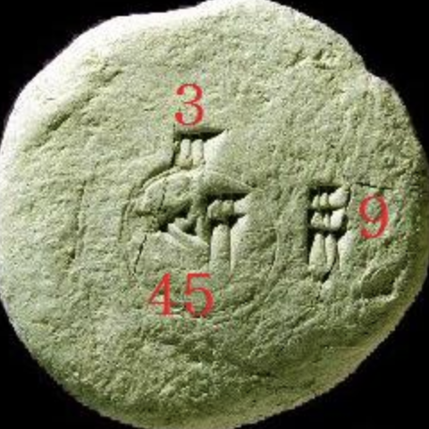
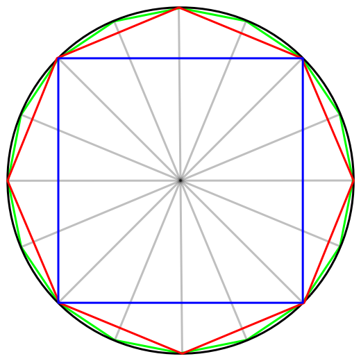
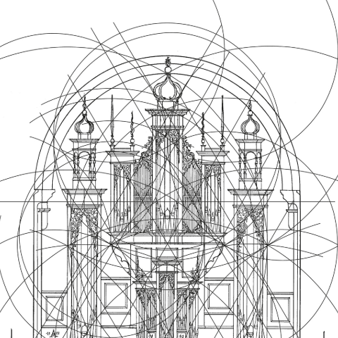
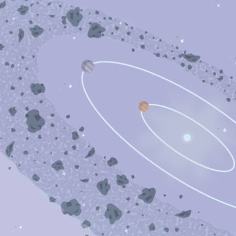
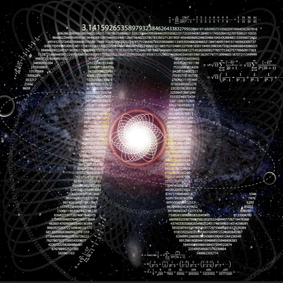
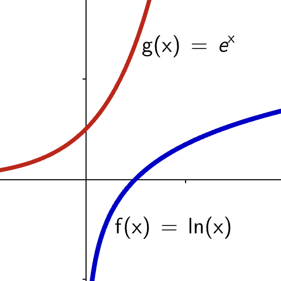
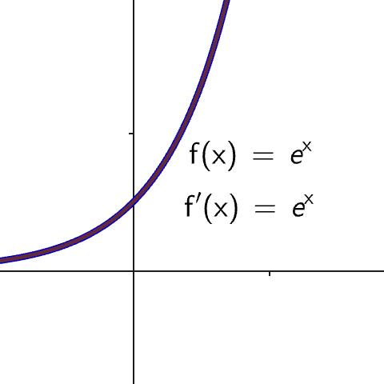
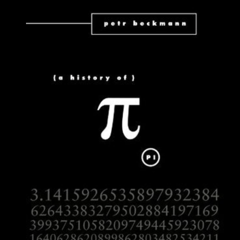
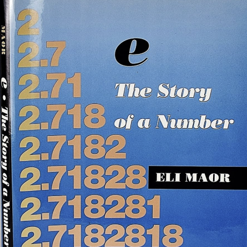

A Brief Story of
$\large \pi$ and $\large e$
A Story of $\large \pi$
A very brief overview
Where does $\large \pi$ come from?
Origin of $\large \pi$
- Babylonians (~1900-1600 BCE) used $\pi= 3\frac18 = 3.125$.
- Egyptians (Rhind Papyrus) used $\pi = \left(\frac{16}{9}\right)^2 = 3.1605$.
- Archimedes (250 BCE): $\pi$ between $3\frac{10}{71}$ and $3\frac{1}{7}.$
- Symbol “$\large \pi$” introduced by William Jones in 1706; adopted by Euler.
 |
 |
Common uses of $\large \pi$ in the past (and nowadays too)
- Estimating the area of circles in land division, irrigation, architecture and astronomy.
 |
 |
More Common Uses Today
- Geometry: circle formulas, surface areas, volumes.
- Trigonometry: sine, cosine, periodic functions.
- Physics: waves, oscillations, relativity.
- Engineering: signal processing, simulations, structural analysis.
- Computer graphics: rotations, animations, transformations.
| $V = \dfrac{4}{3}\pi r^2$ |
$\sin(x),$ $ \cos(x),$ $\tan(x)$ |
$\Lambda =\dfrac{8\pi}{3c^2}\rho$ | $X(n) = \ds \sum_{n=0}^{n-1}x(n) e^{-j\frac{2\pi}{N}kn}$ |
Fun Facts
- March 14 (3/14) is celebrated as Pi Day around the world.
- $\large \pi$ is also transcendental — impossible to express as a root of a polynomial.
 |
Fun Facts
- $\large \pi$ is irrational — its decimal expansion never ends or repeats.
Why $\large \pi$ Matters
A universal constant appearing throughout mathematics,
nature, science, and technology.

A Story of $\large e$
A very brief overview
Origin of $\large e$
- First appeared in studies of compound interest in the 1600s.
Origin of $\large e$
How compound interest works?
- Suppose we invest $\$ 100$ in an account that pays 5 percent interest, compounded annually.
| Year | Computation | Amount ($) |
|---|---|---|
| 1 | 100 × 1.05 | 105.00 |
| 2 | 100 × 1.05² = 105 × 1.05 | 110.25 |
| 3 | 100 × 1.05³ = 110.25 × 1.05 | 115.76 |
Origin of $\large e$
How compound interest works?
- Formula for compound interest: \[ \large S = P\left(1+\dfrac{r}{n}\right)^{nt} \]
- $P=$ investment in dollars,
- $r=$ interest (%),
- $t=$ time in years,
- $n=$ number of time the compounding is done per year.
Origin of $\large e$
- Using the formula: \(\,S = P\left(1+\dfrac{r}{n}\right)^{nt}\,\) for $\,P=100.$
| Conversion period | Computation | Amount ($) |
|---|---|---|
| Annually | 100 × (1 + 0.05/1)1 | 105.00 |
| Semiannually | 100 × (1 + 0.05/2)2 | 105.06 |
| Quarterly | 100 × (1 + 0.05/4)4 | 105.09 |
| Monthly | 100 × (1 + 0.05/12)12 | 105.12 |
| Weekly | 100 × (1 + 0.05/52)52 | 105.12 |
| Daily | 100 × (1 + 0.05/365)365 | 105.13 |
Origin of $\large e$
No bank has ever come up with such a generous offer. ☹️ |
|
Origin of $\large e$
- Jacob Bernoulli (1683) discovered that when $n$ tends to infinity the value of \( \left(1 + \dfrac{1}{n}\right)^n \) is $\, 2.71828\ldots\approx e$
- Leonhard Euler (1727/1728) gave the constant its name “$\large e$” and formalised its properties.
What is $\large e$?
- $e\approx 2.71828\ldots$ (irrational and transcendental).
- The base of natural logarithms.
- The unique number for which the derivative of \( e^x \) is itself.
 |
 |
Common Uses Today
- Exponential growth and decay (population 👥, radioactivity ☢️, interest 💵).
- Calculus: differential equations, integrals, limits.
- Probability: normal distribution, Poisson processes.
- Complex analysis: Euler's formula
A surprising connection with $0,$ $1,$ $\Large \pi$ and ${\large i}=\sqrt{-1}.$ 🤯
Why $\large e$ Matters
The natural base that describes change, randomness,
and the structure of continuous processes.
References
- A history of $\Large \pi\,$ by Petr Beckmann
- $\Large e$ The story of a number by Eli Maor
 |
 |